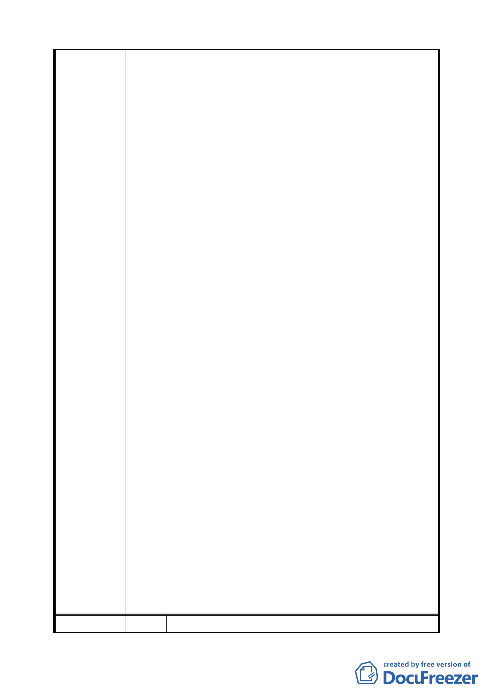

為維繫地區歷史風貌與居民信仰中心，建請針對R1街廓內
之土地公廟要求維護並安置，且留設面積得不計入容積計
算。
1.都市更新之時程獎勵應以本次通盤檢討施行日重新起算。
2.建請 R1 街廓地下層開挖規模部分仍維持原限制 60%為準。
3.建請將 R1 街廓之建築物高度比照新街廓調整為以六十公
建 議 辦 法 尺為限。
4.建請 R1 街廓西側經貿一路沿線 3OM 範圍內比照南港路沿
線之容積率限制，提高為 300% 。
5.建請針對 R1 街廓內之土地公廟要求維護並安置，且留設面
積得不計入容積計算。
1.為免造成 R1 街廓與 R16、R17 街廓之不公平對待，比照本
府 95 年 6 月 15 日公告都市更新「一定時程」之適用，延
長第二期法定容積×5%之適用至 101 年 6 月 14 日，並取消
第三期時程獎勵規定。
2.同意發展局所提「配合建蔽率調整，修訂地下開挖率規
定」，維持原公展計畫。
3.同意陳情民眾所提建議，取消公展計畫中建物高度之管
制，回歸本市土地使用分區管制規則規定辦理。
4.同意發展局所提說明「依本市土地使用分區管制規則第 10
條規定『建築物面臨 30 公尺以上之道路，臨接或面前道路
委員會決議 對側有河川，於不妨礙公共交通、衛生、安全，且創造優
美景觀循都市計畫程序劃定者，容積率得酌予提高』，且經
貿一路 35 公尺係因經貿園區辦理市地重劃與區段徵收作
業，由其他基地共同負擔所致，R1 街廓並無對價付出，且
經貿一路與二路側之住宅區容積率為 120%及 225%基於容
積率訂定之公平一致性，故維持原公展規定，不宜提高容
積率」。
5.同意發展局所提說明與修正：「R1 街廓內之土地公廟不計入
容積一節，查 R1 街廓土地係屬私有，其上之土地公廟係為
私設，且非屬具保存價值之歷史建物、古蹟，其面積計算
仍應依現行法令規定辦理。至設置之區位應由土地所有權
人協議定之」。
編 號 2 陳情人 南港里闕里長貴卿等 2 人
16